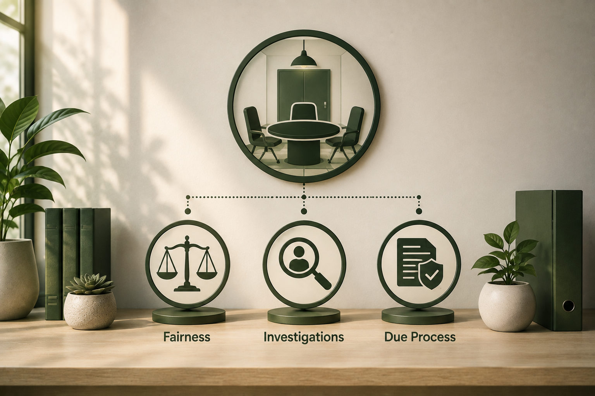

Build an Organization That Is Fair Enough to Trust—and Strong Enough to Endure.
Orji Strategies equips founders, organizational leaders, investigators, and decision-makers with Root to Crown—our primary consulting method—and HEARTH, plus practical frameworks for fair decisions, dependable systems, leadership continuity, and enduring institutional strength.
Two pathways to organizations that build, structure, grow, and endure.
Do you need fairer, more defensible decisions and due process?
Explore our workplace investigations and procedural fairness work, anchored in HEARTH™.
Explore HEARTH™Do you need an organization that can endure without one indispensable leader?
Explore Root to Crown—our primary consulting method for founder independence, governance, succession, knowledge transfer, and continuity.
Explore Root to CrownThe obstacles to trust and continuity.
From founder dependency to procedural failures, we address the root causes of organizational fragility.
Founder dependency
The business cannot operate, decide, or grow without one person's presence and knowledge.
Succession uncertainty
No clear plan for leadership transition, talent pipeline, or ownership continuity.
Undocumented knowledge
Critical know-how, relationships, and process knowledge exist only in people's heads.
Inconsistent investigations
Decisions are made without clear process, credible analysis, or defensible documentation.
Weak governance
No clear structures for oversight, accountability, or strategic decision-making.
Loss of trust
Procedural fairness failures erode confidence in leadership and the institution.
Poor credibility assessments
Unclear or indefensible decisions based on weak analysis of facts and credibility.
Leadership transition risks
No pipeline of prepared leaders ready to step into critical roles when needed.
Proprietary frameworks for organizational strength.
Root to Crown and HEARTH are our consulting methods. The Small Room is a standalone publication.
 Primary method
Primary method
Root to Crown
Our primary consulting method—a comprehensive operating system for founder independence, succession, governance, leadership development, and knowledge transfer.
Explore Root to Crown Consulting method
Consulting method
HEARTH™
A human-centered approach to workplace investigations and procedural fairness that builds trust and protects institutional reputation.
Explore HEARTH™
PublicationThe Small Room
A standalone publication—a framework for fair hearings, workplace investigations, due process, credibility assessment, and defensible decision-making.
Explore The Small Room publicationOrji Strategies brings together legal depth, investigative experience, business acumen, and a human-centered philosophy to help you design organizations that build, structure, grow, and endure. Root to Crown is our primary consulting method.
Serving leaders who build enduring institutions.
We work with founders, institutional leaders, investigators, and boards across sectors and geographies.
Founders & Business Owners
Founder dependency, undocumented knowledge, succession uncertainty, and leadership gaps.
Explore Root to CrownWorkplace & Institutional Leaders
Procedural fairness, inconsistent investigations, credibility analysis, and due process.
Explore HEARTH™Investigators & Decision-Makers
Credibility assessment, hearing process, defensible decisions, and documentation.
Explore TrainingBoards & Executive Teams
Governance design, leadership pipeline, organizational trust, and strategic continuity.
Explore Advisory MO
MO
Michael Orji brings together legal training, investigation experience, business management, mediation work, and theological depth to help organizations build, structure, grow, and endure.
Practical tools for leaders and builders.
Explore a growing library of books, workbooks, assessment tools, and downloadable resources designed to help you apply Root to Crown and HEARTH in your organization. The Small Room is available as a standalone publication.

The Small Room Method

Root to Crown Handbook

Fair Process Audit

Founder Dependency Assessment
What is your organization depending on that it cannot afford to lose?
Take an assessment, schedule a consultation, or explore Root to Crown to begin building a stronger, more enduring organization.